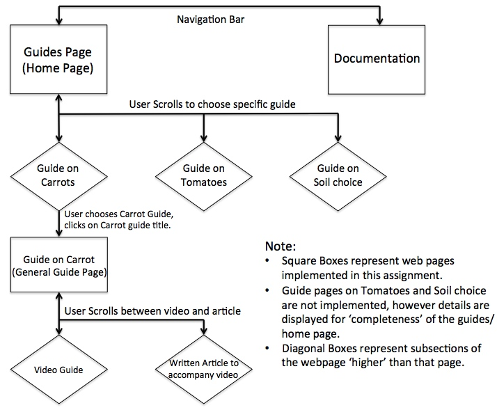
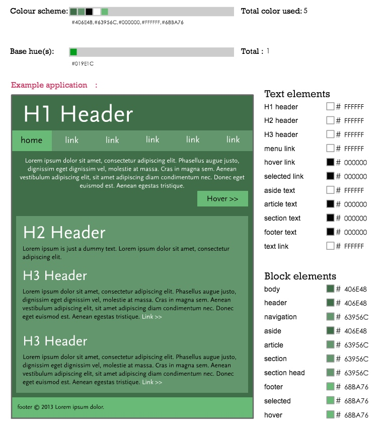

Task 1 a)
The main source of navigation to the main sections of the site are through a navigation bar at the top of each webpage. This navbar is accessible from every page of the website. The flowchart above, shows that the nav bar can access the Guides Section and the Documentation Section. Also accessible from this bar, although not implemented is the Getting Started section. For this website, please note that the Guides Main Page for this website acts as the Home Page as this is the likely center point of use for the majority of users.
Task 1 b)
WireFrame
Hello this is the text and information for WireFrame
Fonts
Font Scheme: Describe each font used on the site and its role; with this description give a brief rationale (i.e. explanation of why you made that choice) for each font used.
Colour Scheme

Colour Scheme: Describe the basic type of colour scheme (e.g. monochrome) and provide the rationale for your colour choices; include a design eye.
I have chosen a fairly minimalist approach to this colour scheme by only using a small number of colours - all with the same hue. This monochromatic colour scheme, I believe, reflects the earthy tones that is reminiscant of a vegetable garden and thus brings an immediate sense as to what the websites content is.
In addition to this I have chosen a fairly weak colour scheme as to not overpower a user when these colours are displayed on a full computer screen.
Lines and borders Scheme
Lines and borders scheme (indluding backgrounds): Describe and provide a rationale regarding choices of lines and borders, backgrounds, use of white space and other methods for grouping, segmenting or giving a particular graphical 'feel' to the site.